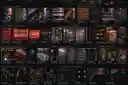
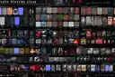
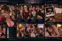
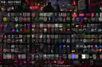

Ripping Many Arms Off visual samples · latest expansion
Seven compact previews of the newest generated concepts. They are reference derivatives, not production textures or identity evidence. The character studies are fictional shapeshifter/noir design work.

Mercer & Red Street texture bible

Complete neon-city texture atlas

Ripping Many Arms Off companion dashboard

Expanded Mercer & Red Street texture bibleRainy neon lookback at Northpoint